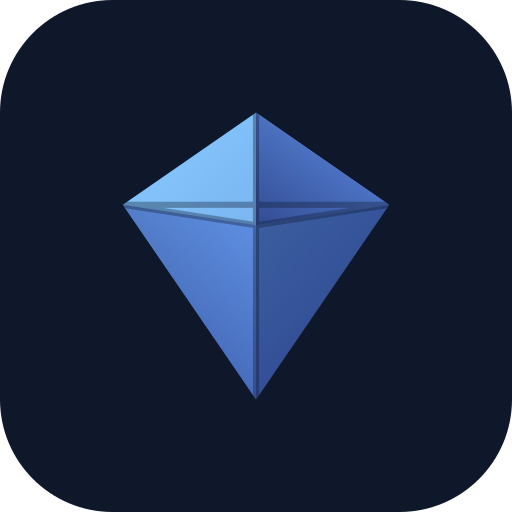
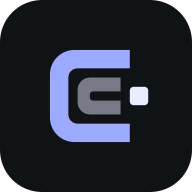
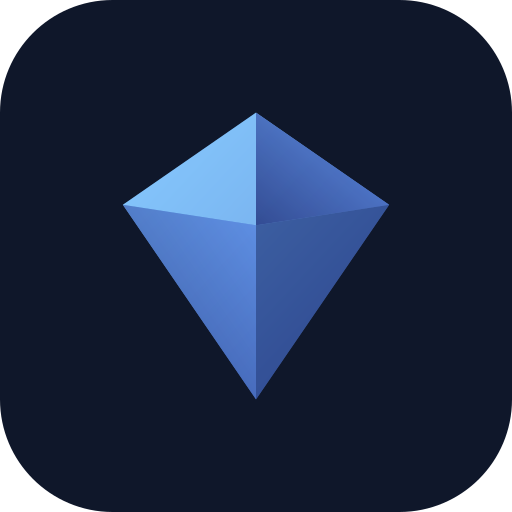
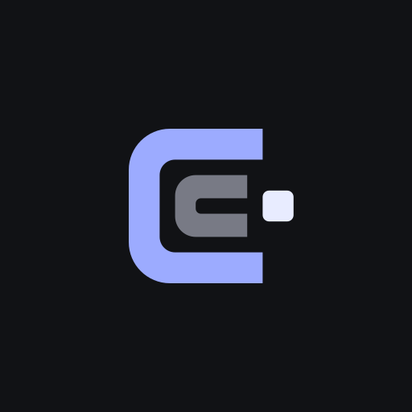

Primary lockuplogos/lockup.svg
Identity system 01
The local agent core that stays useful when the shell changes.
Cerne is the local agent core that stays useful when the shell changes. A complete visual system for a local-first agent cockpit and embeddable runtime.
Candidate boundary
Every application below is illustrative brand direction only. Production website, cockpit, code, binaries, packages, installers, and user state are unchanged.
01 / Mark
Open shell. Held core.
Fixed geometry, no visual effects. The primary family is tuned for warm light surfaces; the inverse family uses brighter text-safe tones on Core Night.
Inverse lockuplogos/lockup-inverse.svg
Primarymark.svg
Inversemark-inverse.svg
Wordmarkwordmark.svg
Inversewordmark-inverse.svg
Mono blackmono-black.svg
Mono whitemono-white.svg
02 / System
Warm field, cobalt signal.
Canvas keeps the product grounded. Cobalt identifies action and selection. Core Night creates a focused technical mode without defaulting to terminal aesthetics.
Cobalt
#3D63D8Deep
#2749ADDark-surface Text
#9CABFFSoft
#E8ECFFCore Night
#111215Canvas
#F7F5EFSurface
#FFFFFFInk
#171719Muted
#666976Line
#D9D7D0
Inter / system sans fallback
Useful stays visible.
Compact, plain-spoken typography gives the system presence without competing with the work in the cockpit.
Identifiers / monospace
session/local-07
model/provider
tool.awaiting-approval
runtime.in-process
model/provider
tool.awaiting-approval
runtime.in-process
03 / Scale
Still a C at sixteen.
The opening and separate core remain the dominant read at interface sizes. Use the supplied icon tile where the environment needs a contained silhouette.
Light surface / primary mark
64 px
32 px
16 px
Core Night / favicon tile
64 px
32 px
16 px
favicon.svg
app-icon.svg
icon-192.svg
icon-512.svg
maskable.svg
04 / Social
The proposition, not a placeholder.
The default social card carries the approved positioning and descriptor as visible text. It does not imply a hosted service or shipped consumer integration.
{kind=link}
{kind=link}
05 / Website
Public website direction.
A light, editorial entry point. Product language stays factual while the open-C construction becomes the visual focus.
Illustrative brand applicationPublic website header and hero / production website unchanged
ProductRuntimePrinciples
Local-first / human authority
The local agent core that stays useful when the shell changes.
A complete local-first agent application with a headed web cockpit and an embeddable in-process Go runtime.
Explore the cockpitRead the runtime guide
shell / core
06 / Cockpit
Control remains explicit.
Light and dark directions use the same hierarchy: identity in the header, stable navigation in the sidebar, and human approval visibly inside the work surface.
Illustrative brand applicationsCockpit header and sidebar, light and dark / production cockpit unchanged
local runtime
Session / local-07
Review before the tool continues.
Inspect the current workspace and summarize the change.
The workspace is ready. One tool action needs your approval before it can continue.
Human approval requiredtool / read workspace
Light direction / warm workspace canvas and cobalt action signal
local runtime
Session / local-07
Review before the tool continues.
Inspect the current workspace and summarize the change.
The workspace is ready. One tool action needs your approval before it can continue.
Human approval requiredtool / read workspace
Dark direction / Core Night field with accessible Soft and dark-surface text